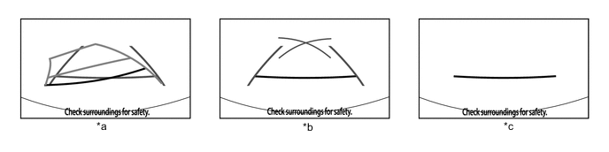

GENERAL
This system has a rear television camera assembly mounted on the back door to display an image of the area behind the vehicle on the multi-display. The multi-display also shows a composite view consisting of the area behind the vehicle and parking guide lines to assist the driver in parking the vehicle by monitoring the area behind the vehicle.
This system consists of the following components:
Television camera assembly
Navigation receiver assembly*1
Radio and display receiver assembly*2
Steering sensor
Hybrid vehicle control ECU
Main body ECU (multiplex network body ECU)
Skid control ECU
Power steering ECU assembly
Clearance warning ECU assembly*3
*1: for Navigation Receiver Type
*2: for Radio and Display Type
*3: w/ Toyota Parking Assist-sensor System
This system is equipped with a self-diagnosis system, which is operated on a designated window that appears on the multi-display.
FUNCTION OF COMPONENTS
The rear television camera assembly controls the system by using information from the following components.
| Item | Function |
|---|---|
| Rear Television Camera Assembly |
|
|
|
| Steering Sensor | Detects the angle of the steering wheel and transmits the resulting signals to the rear television camera assembly via CAN communication. |
| Hybrid Vehicle Control ECU |
|
| Skid control ECU | Transmits the vehicle speed signal to the rear television camera assembly via CAN communication. |
| Main Body ECU (Multiplex Network Body ECU) | Transmits the back door courtesy switch signal to the rear television camera assembly via CAN communication. |
| Power Steering ECU Assembly | Transmits an EPS variation signal to the rear television camera assembly via CAN communication. |
| Clearance Warning ECU Assembly*3 | Transmits the sonar information signal to the rear television camera assembly via CAN communication. |
*1: for Navigation Receiver Type
*2: for Radio and Display Type
*3: w/ Toyota Parking Assist-sensor System
OPERATION EXPLANATION
The navigation receiver assembly*1 or radio and display receiver assembly*2 receives the reverse signal when the power switch is on (IG) and reverse (R) is selected. After receiving the reverse signal, the multi-display switches to the parking assist monitor system.
*1: for Navigation Receiver Type
*2: for Radio and Display Type
DISPLAY MODE

| *a | Estimated Course Line Display Mode | *b | Parking Assist Guide Line Display Mode |
| *c | Distance Guide Line Display Mode | - | - |
| Parking Assist Monitor Display Mode | Distance Guide Lines (Red) |
Estimated Course Lines (Yellow) |
Distance Guide Line (Yellow) |
Vehicle Width Extension Guide Line (Blue) |
Distance Guide Line (Blue) |
Parking Assist Guide Lines (Blue) |
|---|---|---|---|---|---|---|
| Estimated course line display mode | Displayed | Displayed | Displayed | Displayed | Displayed | Not displayed |
| Parking assist guide line display mode | Displayed | Not displayed | Not displayed | Displayed | Not displayed | Displayed |
| Distance guide line display mode | Displayed | Not displayed | Not displayed | Not displayed | Not displayed | Not displayed |
DIAGNOSTIC FUNCTION OUTLINE
This parking assist monitor system has a diagnostic function displayed on the multi-display. This function enables calibration (adjustment and verification) of the parking assist monitor system.
The following items for the parking assist monitor system can be checked using the GTS.
| Item | Proceed to |
|---|---|
| DTC | |
| Data List / Active Test |